|


|
|
| Service News | ||
|
|
Alfa 159
versione: all versions |
|
|||
| 0000 0 000 AA |
NEW MODEL
Main features and technical specifications |
|||
The name of the new Alfa Romeo model is the Alfa 159 (Fig. 1).
The model will initially be available in a 4 door version, with three trim levels (Basis, Medium, High) and 6 engine types:
-three petrol (1.9JTS, 2.2JTS and 3.2JTS);-three diesel (1.9JTDM 8v, 1.9JTDM 16v and 2.4JTDM 20v);The new model may be fitted with the following equipment, fitted as standard or available on request: Cruise Control; rain, dusk and parking sensors (front and rear); xenon headlamps; satellite navigation radio with built-in maps, voice commands and hands-free GSM telephone; automatic dual zone or triple zone climate control; radio with CD player (including MP3) and CD Changer; BOSE Hi-Fi sound system; electrically adjustable seats and rear seat with folding backrest; starter motor with (START/STOP) button in the dashboard; etc.
The pages which follow contain the identification data, dimensions, main specifications and technical data relating to the two different engine types and a description of the most important and innovative features of the new model.
Fig. 1 - 3/4 front view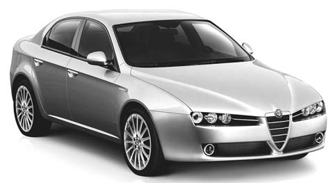
|
VERSION |
ENGINE |
BODYWORK |
|
1.9JTS |
939A6000 |
939AXA1B 00 |
|
2.2JTS |
939A5000 |
939AXB1B 03 |
|
3.2JTS |
939A000 |
939AXG2B |
|
1.9JTDM 8v |
939A1000 |
939AXE1B 04 |
|
1.9JTDM 16v |
939A2000 |
939AXC1B 01 |
|
2.4JTDM 20v |
939A3000 |
939AXD1B 02 |
DIMENSIONS
Fig. 2 - Vehicle dimensions in mm (with unladen vehicle and standard tyres)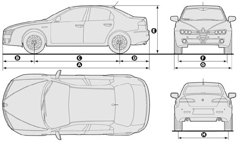
|
A |
B |
C |
D |
E |
F |
G |
H |
|
4660 |
1000 |
2700 |
960 |
1422 1417 (*) |
1578 1593 (*) |
1828 |
1555 1573 (*) |
(*) With 215/55R16' tyres
ENGINES
The new Alfa 159 features the following engines:
-1.9 JTS (1859 cm3) four cylinders in line, 16 valves, running on petrol with electronic direct fuel injection with a power output of 118 KW (160 CV) at 6500 rpm-2.2 JTS (2198 cm3) four cylinders in line, 16 valves, running on petrol with electronic direct fuel injection with a power output of 136 KW (185 CV) at 6500 rpm-3.2 JTS (3195 cm3) six cylinders in line, 24 valves, running on petrol with electronic direct fuel injection with a power output of 191 KW (260 CV) at 6300 rpm-1.9 JTDM (1910 cm3) four cylinders in line, 8 valves, Common Rail direct injection diesel engine with a power output of 88 kW (120 CV) at 4000 rpm.-1.9 JTDM (1910 cm3) four cylinders in line, 16 valves, Common Rail direct injection diesel engine with a power output of 110 kW (150 CV) at 4000 rpm.-2.4 JTDM (2387 cm3) four cylinders in line, 20 valves, Common Rail direct injection diesel engine with a power output of 147 kW (200 CV) at 4000 rpm.|
1.9JTS | |
| -Engine marking-Total capacity-Max power CEE-At a speed of-Max torque CEE-At a speed of-Fuel system-Top speed |
939A6000 1859 cm3 118 kW (160 CV) 6500 rpm 190 Nm (19.4 kgm) 4500 rpm Direct electronic injection 212 km/h |
|
2.2JTS | |
| -Engine marking-Total capacity-Max power CEE-At a speed of-Max torque CEE-At a speed of-Fuel system-Top speed |
939A5000 2198 cm3 136kW (185 CV) 6500 rpm 230 Nm (23.4 Kgm) 4500 rpm Direct electronic injection 222 Km/h |
|
3.2JTS | |
| -Engine marking-Total capacity-Max power CEE-At a speed of-Max torque CEE-At a speed of-Fuel system-Top speed |
939A000 3195 cm3 191kW (260 CV) 6300 rpm 322 Nm (32,8 Kgm) 4500 rpm Direct electronic injection 240 Km/h |
|
1.9JTDM 8v | |
| -Engine marking-Total capacity-Max power CEE-At a speed of-Max torque CEE-At a speed of-Fuel system-Top speed |
939A1000 1910 cm3 88 kW (120 CV) 4000 rpm 280 Nm (28.5 kgm) 2000 rpm Common Rail direct injection with supercharging 191 km/h |
|
1.9JTDM 16v | |
| -Engine marking-Total capacity-Max power CEE-At a speed of-Max torque CEE-At a speed of-Fuel system-Top speed |
939A2000 1910 cm3 110 kW (150 CV) 4000 rpm 320 Nm (32.6 kgm) 2000 rpm Common Rail direct injection with supercharging 210 km/h |
|
2.4JTDM 20v | |
| -Engine marking-Total capacity-Max power CEE-At a speed of-Max torque CEE-At a speed of-Fuel system-Top speed |
939A3000 2387 cm3 (5 cylinders - 20 valves) 147kW (200 CV) 4000 rpm 400 Nm (40.8kgm) 2000 rpm Common Rail direct injection with supercharging 228 km/h |
JTS PETROL ENGINES (Jet Thrust Stoichiometric)
Description of new 1.9 JTS and 2.2 JTS engines
The new 4 cylinder engines (Fig. 3) represent the latest development in 4 cylinder Alfa Romeo engines and constitute the natural evolution of the previous 2.0 JTS engine (the first high performance direct petrol injection engine).
Fig. 3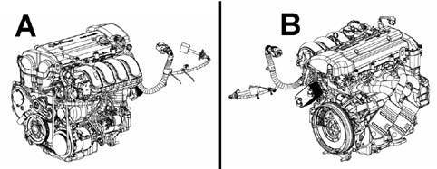
Main technical specifications:
The new engines (in particular the 2.2 JTS) are, compared with their predecessor (2.0 JTS), more powerful (20 CV), have an increased maximum torque and weigh about 20 kg less. (with the cylinder head and cylinder block/crankcase in aluminium)
Other features are: the highly developed timing system composed of a rocker system with rollers instead of cups (maintaining the hydraulic clearance recovery) which considerably reduces friction losses in the head and the continuous variation timing system on both the intake and the exhaust axis by means of new type transformers. These transformers allow travel on both camshafts through 50 engine angle degrees and are designed on the one hand to guarantee optimum performance by selecting the appropriate timing at all engine speeds and on the other hand to allow a reduction in consumption and emissions in partial load conditions.
Another feature is the camshaft drive system which takes place through a chain which has the main advantage, compared with a belt, of not needing replacing during the life of the engine.
For increased comfort whilst driving both in terms of vibrations and acoustics, the engine is equipped with two counter-balance shafts which eliminate the second order alternating forces typical of four cylinder in line engines.
The high power has meant that sodium cooled exhaust valves have needed to be fitted.
The combustion chamber is suitably designed with four valves per cylinder: with large 35.3 mm intake valves and 30.3 mm exhaust valves.
The main technical specifications featured on the new 1.9/2.2JTS engines and,
-Twin overhead camshaft with-Direct injection---Hydraulic tappets for automatic clearance recovery.---Counter-balance shafts---Poly-v belt with automatic tensioner and secondary flexible belt for engine accessories-Drive by wire electronically activated throttle-Individual ignition coils-Low specific consumption and reduced emissions-EOBD-3 Lambda sensors for emission control--4-2-1 performance type exhaust manifold-Minimum maintenance and maximum accessibility-Euro 4 emission levelDescription of the new 3.2 JTS engine
The new 6 cylinder engine (Fig. 4) represents a radical change from the Alfa Romeo V6 engine and is a natural development from it. Currently only the 3200 cm3 version with direct petrol injection is being introduced.
Fig. 4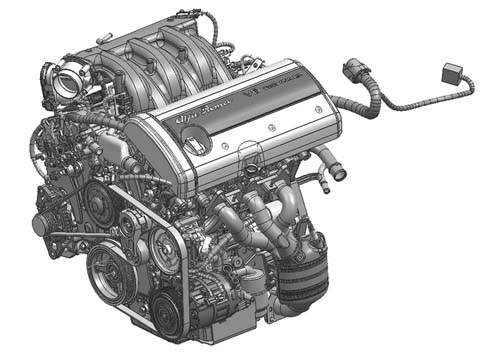
Main technical specifications:
Compared with its predecessor with the same capacity, the new engine develops more power and a greater maximum torque of around 10 CV and 20 Nm. The 60° V structure has been maintained with the heads and cylinder block/crankcase in aluminium alloy. The timing chain drive is completely new but in keeping with Alfa Romeo traditions.
Other features are: the highly developed timing system, composed of a rocker sysem with rollers instead of cups (maintaining the hydraulic clearance recovery) which considerably reduces friction losses in the head and the continuous variation timing system for both the intake and exhaust axis with transformers.
These transformers allow travel on both camshafts through 50 engine angle degrees and are designed on the one hand to guarantee optimum performance by selecting the appropriate timing at all engine speeds and on the other hand to allow a reduction in consumption and emissions in partial load conditions.
Another feature is the camshaft drive system which takes place through a main chain that sends the drive to the heads via two secondary chains. The tension is provided by automatic hydraulic tensioners that guarantee that the system is maintenance-free for the life of the engine.
The intake manifold and combustion chamber assembly is designed to improve the air-fuel mixture process and the combustion process; the four valves per cylinder with a reference diameter of 33.4 mm at the intake and 28.4 mm at the exhaust guarantee suitable permeability to assist engine performance.
Exhaust system
The engine, equipped with an exhaust system that includes catalyzing elements that are relatively close to the engine, makes it possible to reach the Euro 4 limits without recourse to special systems such as secondary air and electric heating.
The main technical specifications are listed below and
-Twin overhead camshaft with----Hydraulic tappets for automatic clearance recovery.-Light aluminium alloy cylinder block/crankcase--Poly-v belt with automatic tensioner for engine accessories-Drive by wire electronically actuated throttle-Individual ignition coils-Low specific consumption and reduced emissions-EOBD-4 Lambda sensors for emission control-Dual detonation sensor to improve sensitivity to engine knock and to improve maximum performance-Performance type exhaust manifold with built-in catalytic pre-converters-Minimal maintenance-Euro 4 emission level1.9/2.2 JTS engine exhaust system
The engine, equipped with an exhaust system that includes catalyzing elements that are relatively close to the cylinder head, makes it possible to reach the Euro 4 limits without recourse to special systems such as secondary air and electric heating.
Thanks to the possibility of injecting petrol directly into the chamber there is the advantage of the so-called dual injection whilst the catalytic converter is heating up (about 50 seconds) reducing emissions considerably. This dual injection produces a richer mixture nearer the spark plug; this mixture, with excellent ignition properties, makes it possible to implement considerable ignition delays (the spark strikes after TDC, in the expansion stroke; this is known as 'negative advance'). This latter feature produces two advantages: the first is that the gases are hotter (therefore the catalytic converter heats up quicker); the second is that, on account of the gases being hotter during the expansion and exhaust strokes, a significant portion of unburnt hydrocarbons are already converted before the catalytic converter thereby reducing the content.
3.2 JTS engine exhaust system
The engine is equipped with an exhaust system that includes an initial set of catalyzing elements that are relatively close to the cylinder head to reduce the level of emissions in the intial operating stages.
Two catalytic converters under the floor and 4 Lambda sensors complete the system making it possible to reach Euro 4 standards without recourse to special systems such as secondary air or electric heating.
JTS engines injection system
The injection system is the "'diretta§"' type, in other words the fuel is injected directly into the combustion chamber.
The main advantage is improved evaporation and, as a result, given that the evaporation heat is taken away from the intake air and not the intake walls, there is an increase in the engine's volumetric efficiency.
The air and petrol mixture, as well as being higher in density is also colder and this allows an increase in the compression ratio which has been selected at a high value of 11.3 for 4 cylinder engines and 11.25 for 6 cylinder engines in spite of the use Euro Super petrol with an octane rating of 95.
JTS engines ignition system
The ignition is guaranteed by a single spark plug per cylinder. The direct injection, coupled with a geometry of 4 valves per cylinder, creates a mixture that tends to be more concentrated in the middle of the chamber.
The ignition system features a single ignition coil for each cylinder.
DIESEL ENGINES (JTDM)
A brief description of the main innovative/significant features of the Diesel engines (1.9 JTDM 8v and 1.9 JTDM 16v and 2.4 JTDM 20v) is given below.
The Diesel engines have a second generation MULTIJET COMMON RAIL system with direct injection into the combustion chamer in the piston.
The MULTIJET system produces multiple injections at a high injection pressure (up to 1600 bar) which is electronically controlled in an extremely flexible way since it is not connected to the engine speed; at the same time these injections are very precise in terms of both duration and phasing.
The injection pump is the new generation type and in addition to reaching a higer injection pressure it also allows less absorption of power and, as a result, reduced fuel consumption.
The injector, which is also the new generation type, makes it possible to carry out injections even closer together and with precise quantities of fuel. The nozzle, which has 7 openings for 16/20 valve engines and 6 openings for 8 valve engines, allows improved combustion and, as a result, improved performance, consumption and emissions. The system also makes it possible to carry out two pilot injections guaranteeing particularly smooth and quiet operation both during cold starting and when the engine is at operating temperature.
The extremely flexible management of the fuel injection pressure also benefits:
-high performance-reduced specific consumption-adherence with Euro 4 pollutant emission levelsIn addition, to guarantee reliability for such a high performance engine (2.4 JTDM 20v) it has been necessary to review the design of several components, in particular:
-special shape steel connecting rod-connecting rod bearings in high resistance material-cylinder head gasket with 4 functional layers-cylinder head with valves with reduced stem diameter (5 mm) and improved cooling circuitThe supercharging is carried out by a variable geometry turbocharger (Garrett for the 8/16 valve engines and KKK for the 20 valve engines) with new design compressor impellers and turbine. The turbine is equipped with a moving vane distributor which regulates the intake of gases into the impeller. The position of the distributor moving vanes is altered by a pneumatic actuator managed by the engine management electronic control unit varying the speed of the gases and thereby producing the desired supercharging pressure.
The advantages of this solution are the result of the improved exploitation of the energy of the exhaust gases: at low speeds the supercharging pressure is high (and there is more torque) because, reducing the section that the exhaust gases pass through inreases the speed and, consequently, the rotation speed of the impeller.
As far as the pollution control systems are concerned the following should be pointed out:
-intake manifold with variable swirl (for the 16v engine only)-particle filter under the floor panel (DPF)-pre-catalyzer with high noble metal content-adoption of electrically activated linear EGR valve directly controlled by the engine management control unit;-adoption of recirculationgas/waer heat exchanger for gas cooling-electric throttlePARTICLE FILTER (DPF)
The particle filter (Diesel Particulate Filter - DPF) is a mechanical fllter fitted on the exhaust equipment that physically traps the carbon particles present in the exhaust gases in Diesel engines.
The adoption of this particle filter is necessary to almost completely eliminate the emission of carbon particles in line with current/future legislation.
During the normal usage of the vehicle, the engine management control unit records a series of data (period of usage, type of journey, temperatures reached, etc.) and determines the quantity of particulates accumulated in the filter.
Because the filter is an accumulative system, it should be periodically regenerated (cleaned) by burning the carbon particles.
The regeneration procedure is managed automatically by the engine management control unit according to the accumulation status of the filter and the vehicle usage conditions.
Remind the Customer, as necessary, that during the regeneration the following phenomena may occur: limited increase in the idle speed, fan activation, limited fumes increase, high exhaust temperatures and that these situations should not therefore be interpreted as faults and do not have an adverse effect on the behaviour of the vehicle or on the environment.
CLUTCH
The clutch is the dry, single plate hydraulically operated type with a pedal with no free play.
4 WHEEL DRIVE
The Alfa 159 3.2 JTS has permanent four wheel drive with three differentials (the centre one is the Torsen C self-locking type).
The 'Alfa Romeo Q4 four wheel drive' features permanent, dynamic distribution of the drive over the four wheels reaching the maximum active safety and sports level.
The Torsen C self-locking centre differential manages the drive torque in the most suitable way sharing it 57% at the rear wheels and 43% at the front wheels. The system also ensures excellent drive in all grip conditions thanks to the automatic slip control.
GEARBOX
All the gearboxes are 6 speed with special ratios to emphasise performance; in addition, to enhance the sliding and manoevrability of gear changes, the engagement travel has been reduced and multiple cone synchronizers are used.
There are two type of gearbox to exploit the performance of Alfa 159 engines:
-M32.6 6 speed (A - Fig. 5) for 1.9 JTS, 2.2 JTS and 1.9 JTDM 8/16v verions-F40 6 speed (B - Fig. 5) for 3.2 JTS and 2.4 JTDM 20v versions.Fig. 5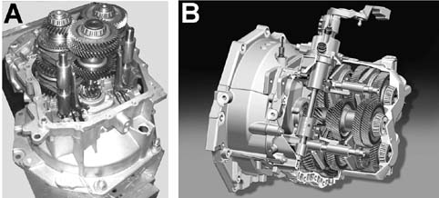
BRAKING SYSTEM
The braking system on the Alfa Romeo 159 can be fitted (as standard or on request) with the most sophisticated electronic or mechanical auxiliary systems, namely:
-ABS: anti-lock brakes-EBD: electrnoic brake force distribution between front and rear wheels-VDC: vehicle stability electronic control.-ASR (with VDC): traction control through management of brakes and engine management control units-Brake Assist (with VDC): automatic increase in braking pressure during panic braking-Hill-holder (with VDC): auxiliary system for setting off on an incline which maintains vehicle braking during stops on a gradient and automatically releases the brakes on setting off.System features (calipers and discs)
The system features depend on the different engine types (power and weight) as described below.
1.9JTS, 2.2JTS, 1.9JTDM 8/16v Engine types
Front
-ventilated disc diameter/thickness 305x28 mm-Teves FN3 cast iron brake calipers with 60 mm diameter piston-brake pad surface area: 58 cm2Rear
-full disc diameter/thickness 278x12 mm-TRW aluminium brake caliper with 38 mm diameter piston (the caliper includes the parking device)-pad surface area: 38 cm23.2JTS and 2.4JTDM 20v Engine types
Front
-ventilated disc diameter/thickness 330x28 mm-Brembo M4-42 fixed type aluminium monobloc brake caliper with 4 42 mm diameter pistons with radial type attachments to the steering knuckle-brake pad surface area: 77 cm2Rear
-ventilated disc diameter/thickness 292x22mm-TRW aluminium brake caliper with 38 mm diameter piston (the caliper includes the parking device)-brake pad surface area: 38 cm2Brembo front brake calipers (monobloc)
A monobloc aluminium caliper is used on the Alfa 159 3.2 JTS and 2.4 JTDM 20v with radial attachments, in other words this means that the caliper (Fig.6) is in a single piece of aluminium instead of in two shells bolted to one another as on previous versions.
The fastening to the steering knuckle is through radial attachments instead of axial as for traditional calipers.
These technical solutions have been chosen to improve the strength of the caliper, for its weight, and provide better performance especially for sports use.
The large size pad requires the use of four cylinders (two on each side) to distribute the braking pressure evenlyon the disc.
Fig. 6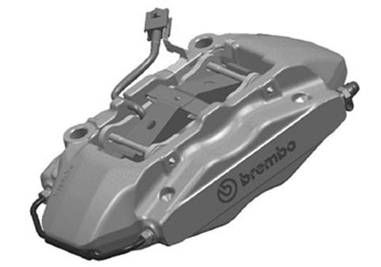
Brake servo
A large diameter (9'+9') brake servo is fitted with a 1' aluminium pump and 36 mm travel to guarantee a good pedal travel reserve even in extreme overheating conditions.
Pedal unit
The Alfa romeo 159 is fitted with a pedal unit with a plastic mount that houses the (steel) brake and (plastic) clutch pedals.
The brake pedal includes a device specially designed for the Alfa Rome 159 that allows the pedal to collapse in the case of impact to limit intrusion into the passenger compartment and injury to the lower limbs.
The accelerator pedal (plastic) is fitted separately on a special mount and the accelerator control is electronic (Drive by Wire system) on all engine versions.
BRAKING SYSTEM DESCRIPTION
ABS
The ABS anti-lock braking system has 4 active sensors and 4 channels with electronic brake force distribution that allows the braking load to be shared between the front and rear wheels.
VDC System (for certain versions/markets)
This is a system that controls the vehicle's stability, helping in maintaining directional control if there is a partial loss in grip of the tyres.
The system, which includes a control unit with 12 valves and a built-in pressure sensor, uses the signals provided by the steering angle sensor incoporated in the steering column switch unit and the longitudinal and lateral acceleration and slewing sensor incorporated in a single control unit located on the tunnel near the centre of gravity. The main functions that the system is capable of carrying out, in addition to those already seen for the ABS, are as follows:
-Hill Holder-ASR-MSRA brief description of these functions is given below for quick reference:
VDC: this is the vehicle dynamic control function. The system is capable of recognizing potentially dangerous situations for the stability of the vehicle and intervenes automatically on the brakes in a differentiated manner on the four wheels to provide a stabilizing torque for the vehicle.
Hill Holder: this function is designed to assist during hill starts. When the driver engages first gear and presses the clutch on a gradient of more than 6%, the system keeps the vehicle braked. When the driver moves their foot from the brake pedal to the accelerator, the vehicle remains braked and the system automatically releases the braking pressure during the vehicle take off avoiding any slipping back. The function is also activated downhill with reverse gear engaged.
Brake Assist: this is the emegency braking assistance function. In emergency braking, detected by measuring the brake pedal application speed, the system automatically and rapidly provides an increase in braking pressure. This function increases deceleration in emergency braking conditions and reduces the braking system response times.
ASR: this is the vehicle traction control function. It intervenes on both the brakes, braking the wheel that is slipping and thereby transferring torque to the other wheel on the axis and on the engine reducing the drive torque.
MSR (engine drive adjustment): this system is an integral part of the ASR that intervenes in the case of a sharp change in gear whilst changing down, resupplying engine torque thereby preventing the drive wheels from being driven too much which, above all, in poor grip conditions, could lead to a loss in stability of the vehicle.
STEERING
The steering geometry with a very direct ratio uses the best, sophisticated geometric solutions already tests on the Alfa 156 improving both the geometry in terms of gradualness and the self-realignment capacities of the vehicle in limit situations.
All the vehicles are equipped with:
-steering wheel with energy absorbing column;-telescopic, jointed steering column with adjustment system;-hydraulic power assisted;-turning circle: 11.2 m (between the pavements)-number of steering wheel turns: 2.33SUSPENSION
The suspension on the Alfa 159 has been completely redesigned with the aim of establishing a new reference in the handling-comfort compromise.
Front suspension
The high quadrilateral front suspension (Fig. 7) has taken the best features of the solution which, already on the Alfa 156, was shown to be extremely effective.
There are diverse improvements that have involved both their filtration and damping capacity and the increase in lateral strength and camber recovery to guarantee improved tyre grip in extreme conditions.
The reduction in the static camber and improved strength of the steering knuckle-hub assembly has made it possible to control tyre wear more effectively.
Fig. 7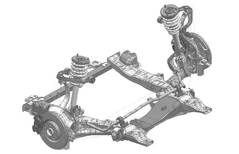
Rear suspension
The rear suspension (Fig. 8) has been completely redesigned going from a multi-link solution to the search for more liberty in order to express an improved performance.
In this case too filtering and longitudinal damping are guaranteed by a structure based on a hydraulic bush and specially designed transverse plate to provide an improved level of comfort whilst the extremely high lateral strength and high camber recovery guarantee excellent handling.
The vehicle control is guaranteed by four bi-tube type shock absorbers with a generous size coaxial spring to provide improved damping in all conditions and vibration and noise filtration.
Fig. 8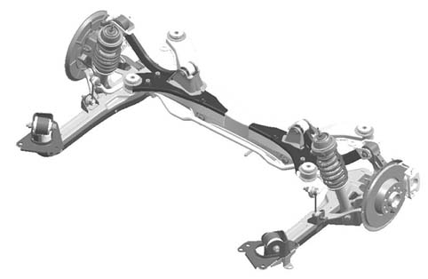
WHEEL ANGLES/GEOMETRY
The figures refer to the angle/geometry check in standard A conditions, i.e.: with the vehicle unladen and in running order (i.e. with a spare wheel, tools, accessories, supplies, full fuel tank and tyres inflated to the recommended pressure).
|
Front wheels |
camber |
20' ±18' (Maximum left/right difference: 18') |
|
Front wheels |
caster |
4˚ 15' ±18' |
|
Front wheels |
semi-toe-in (per wheel) |
-8' ±4' (Maximum left/right difference: 4') |
|
Rear wheels |
camber |
-40' ±18' (Maximum left/right difference: 18') |
|
Rear wheels |
semi-toe-in (per wheel) |
13' ±4' (Maximum left/right difference: 4') |
|
1.9JTS |
2.2JTS |
3.2JTS |
1.9JTDM 8v |
1.9JTDM 16v |
2.4JTDM 20v | |
|
Equipment fitted as standard Rims Tyres |
7Jx16"' (a) 7Jx16"' (L)* 205/55R16 91V 215/55R16 93V (*) |
7Jx16"' (a) 7Jx16"' (L)* 215/55R16 93V |
7,5Jx17"' (L) 225/50R17 98W |
7Jx16"' (a) 7Jx16"' (L)* 215/55R16 93V |
7Jx16"' (a) 7Jx16'" (L)* 215/55R16 93V |
7.5Jx17"' (L) 225/50R17 98W |
|
Equipment available on request Rims Tyres (**) |
7,5x17"' (L) 8x18"' (L) 225/50R17 98W 235/45R18 98W |
7,5x17"' (L) 8x18"' (L) 225/50R17 98W 235/45R18 98W |
8x18"' (L) 235/45R18 98W |
7.5x17"' (L) 8x18"' (L) 225/50R17 98W 235/45R18 98W |
7.5x17'" (L) 8x18"' (L) 225/50R17 98W 235/45R18 98W |
8x18"' (L) 235/45R18 98W |
(a) steel
(L) alloy
(*) for versions/markets where available
(**) chains cannot be fitted
Spare wheel: rim 4.00BX17"' - tyre T125/80R17
 | Winter tyres with H speed index are recommended |
|
205/55 R16"' 91V |
215/55 R16"' 93V |
225/50 R17"' 98W |
235/45 R18'" 98W | |||||
|
front |
rear |
front |
rear |
front |
rear |
front |
rear | |
|
Medium load |
2.3 |
2.3 |
2.3 |
2.3 |
2.5 |
2.5 |
2.7 |
2.5 |
|
Full load |
2,6 |
2,6 |
2,6 |
2,6 |
2.7 |
2.7 |
2.8 |
2,6 |
SNOW CHAINS
As necessary, notify the Customer that only smaller snow chains with a maximum projection of less than 9 mm beyond the tyre profile can be used, only on 205/55 R16' and 215/55 R16' tyres..
Only "spider" type snow chains can be fitted to 225/50 R17" tyres fitted to the outer wheel hub.
(SPIKES SPIDER COMPACT chains - 17003 compact model - with 9 adjustable-length arms and an adaptor for 17 inch wheels are available from Alfa Romeo Accessories).
Snow chains cannot be fitted to 235/45 R18" type tyres.
If the vehicle is being used with chains fitted, it is advisable:
.not to exceed 40 km/h;.not to accelerate sharply;.to switch the ASR system off (light in button on).T.P.M.S TYRE PRESSURE MONITORING SYSTEM
(available on request for certain versions/markets)
The T.P.M.S. (Tyre Pressure Monitoring System) checks the inflation pressure of the tyres and consists of:
-for pressure sensors (one on each wheel) located inside the tyre on the wheel rim;-a radiofrequency control unit located in the passenger compartment;-four radiofrequency transmitter aerials located on the wheel.The information on the inflation state of the tyres is signalled to the driver by means of an acoustic signal and a message on the reconfigurable multifunction display (where fitted)
The following fault conditions can be detected by the system for oneor more tyres:
-tyre deflated;-tyre very deflated or punctured. | Remind the Customer that: - the system control unit checks the pressure of the four tyres fitted on the vehicle and not that of the spare wheel; it is therefore always advisable to include checking the spare wheel inflation pressure when the other tyres are checked - the system only signals inflation pressure values below the recommendedones - the presence of the T.P.M.S. does not mean that the inflation pressure of the tyres and the spare wheel should not be checked regularly |
CRUISE CONTROL
(available on request for certain versions/markets)
This is an electronically controlled device which allows the vehicle to be driven at a speeds between 30 km/h and 190 km/h on long stretches of straight, dry roads where there are few variations in the driving conditions (e.g. motorways) at a desired speed without having to press the accelerator pedal.
The Cruise Control cannot be switched on in 1st gear or reverse and it is advisable to engage it in 4th gear or higher by turning the ring nut on the specific lever.
INTERIORS
Dashboard
The presence and position of the controls, instruments and signals in the dashboard (Fig. 9) may vary depending on the version.
Fig. 9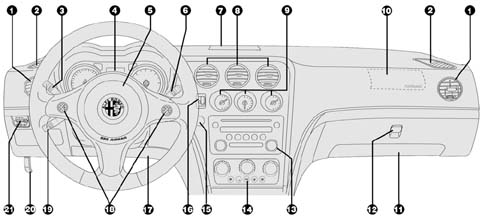
DISPLAY IN INSTRUMENT PANEL
Depending on the version, the instrument panel may be equipped with a multifunction display or reconfigurable multifunction display.
Multifunction display
This is capable of showing the following information, in particular:
on the standard screen:
-time-outside temperature-total or trip mileagevehicle status (event)
-service interval-controls lighting dimmer;-signalling the possibility of ice on the road-speed limit exceeded signalling;-engine oil level display;Reconfigurable multifunction display
This is capable of showing the following information, in particular:
on the standard screen (Fig. 10)
-time A-outside temperature B-date C-trip mileage D-total mileage E-vehicle status signal F (e.g. doors open, ice on the road, etc.)Fig. 10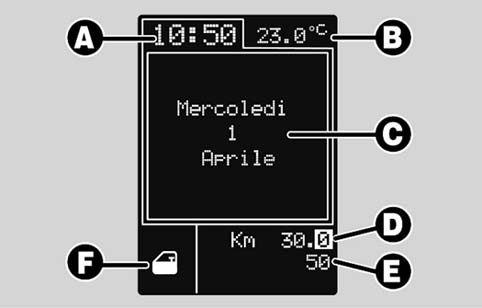
vehicle status (event)
-service interval-Trip computer information;-controls lighting dimmer;-engine oil level display;ELECTRONIC KEY
The Alfa 159 is equipped with an innovative starting system comprising:
.an electronic key with three buttons which, in order to be activated, should be inserted into a starting device (reader).an electronic key reader located in the dashboard at the side of the steering wheel.a START/STOP button located near the electronic key readerThe engine is started, after inserting the electronic key into the reader in the dashboard, using the START/STOP button (Fig. 11) also located in the dashboard and it has the function of activating the vehicle electrical and electronic systems and thereby also switching the engine on/off.
Fig. 11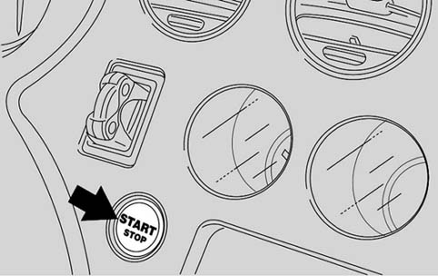
Description of electronic key with remote control
The key also operates the vehicle starting.
-The button with a closed lock diagram activates the central locking of the doors, the boot and the fuel flap with the activation of the alarm (where fitted).-The button with the open lock diagram activates the central unlocking of the doors, the boot and the fuel flap with the switching off of the alarm (where fitted).-The button with the boot icon activates the opening of the boot.The key contains a metal insert (A - Fig. 12) that can be extracted by pressing button B.
The metal insert activates:
-the driver's door lock;-the opening/closing of the windows-the switch (where fitted) for disabling the passenger front air bag and knee bag (where fitted);-the safe-lock device (where fitted - this is a safety device that prevents the interior handles from being operated, thereby providing improved protection against break in attempts)-the emergency release of the key from the starting device.The key also contains a compartment C - Fig. 12 housing the battery D.
Fig. 12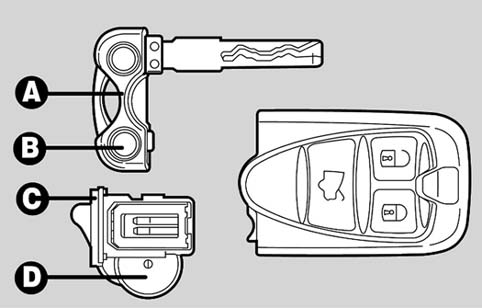
CLIMATE CONTROL SYSTEMS
The following systems are fitted as standard or are availble on request on the Alfa 159 depending on the version:
-Manually operated climate control;-Dual-triple zone automatic climate control systemAll the systems distributed the air as illustrated in the diagram below (Fig. 13)
Fig. 13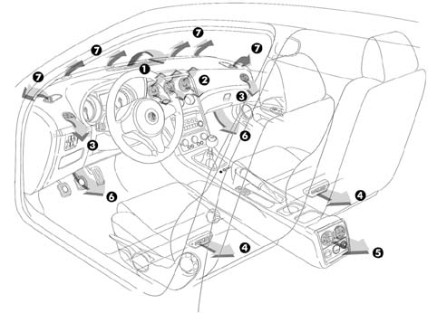
Key
1 - Upper vent
2 - Centre adjustable vents
3 - Side adjustable vents
4 - Rear footwell adjustable air vents
5 - Rear seat adjustable air vents (where fitted)
6 - Front footwell air vents
7 - Vents for demisting/defrosting windscreen and front side windows.
Manual climate control system
The manual climate control system control panel is illustrated in Fig. 14 below.
Fig. 14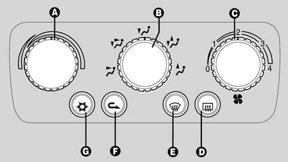
Key
A - air temperature adjustment knob (hot/cold air mixture);
B - air distribution knob;
C - fan speed knob;
D - heated rear windscreen and rear view mirrors defrosting on/off button (where fitted);
E - maximum defrosting/demisting for windscreen and side front windows and door mirrors on/off button;
F - interior air recirculation on/off button;
G - climate control compressor on/off button.
The operation of the manual climate control is traditional and takes place by operating the knobs and buttons described above.
Dual/triple zone automatic climate control system
We should remember that the operating principle on which the temperature control is based is linked to the 'equivalent temperture' concept.
Therefore a control based on the equivalent temperature concept does not try and maintain the passenger compartment at a constant temperature, but tries to keep the heat felt by the Custome constant.
The heat felt depends on all the thermal energy exchanges with the environment and is estimated by the climate control system control unit on the basis of ambient parameters.
There is a sensor to detect solar rays through the acquisition of the bilateral signal (left-right) which contributes to determining comfort conditions in terms of air distribution and temperature.
It it therefore necessary to make the Customer understand that the temperature measured in the passenger compartment using a thermometer does not necessary coincide with the temperature shown on the display because whilst the thermometer indicates degrees centigrade the display shows a temperature value measured in equivalent temperature °C .
Remind the Customer that the only possible action is to identify and select an equivalent temperature value that is to their liking and, irrespective of the outside conditions,the system will work adjusting all the variables in its control to ensure the requested thermal sensation.
Fig. 15 - Dual/triple zone front controls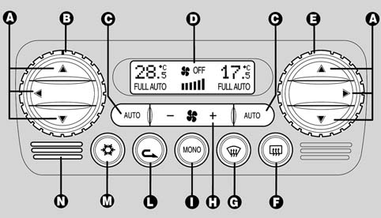
A - Air distribution selection buttons (left side and right side);
B - left side temperature adjustment knob;
C - FULL AUTO function activation button (automatic operation);
D - climate control system information display;
E - right side temperature adjustment knob;
F - heated rear windscreen on/off button;
G - MAX-DEF function activating button (rapid defrosting/demisting of front windows, heated rear windscreen and door mirrors if the heated type);
H - OFF system fan speed increase/decrease buttons;
I - button for activating MONO function for aligning temperature set by the driver;
L - interior air recirculation on/off button;
M - climate control system compressor on/off button;
N - interior air temperature sensor
The climate control system automatically adjusts the following parameters/functions:
-air temperature at the driver/ passenger vents;-fan speed (varies continuously);-driver/passenger air distribution;-compressor engagement;-air recirculation.All these functions can be altered manually, in other words the Customer can select one or more functions at will: in this way the Customer removes all the functions selected manually from the automatic system (the system cannot intervene unless it is for safety reasons) to guarantee the equivalent temperature requested.
The following parameters/functions can be set/modified manually:
-Requested temperature;-fan speed;-air distribution in 7 different positions;-compressor enablement/disabling;-window defrosting/demisting;-air recirculation;-single zone function.The system may also be equipped with the AQS function (Air Quality System) which automatically switches on the internal air recirculation if the outside air is polluted (e.g. whilst driving in traffic or through a tunnel).
On some versions, the system includes a misting sensor, fitted behind the interior rear view mirror, capable of 'checking' a predefined area on the inner surface of the windscreen and able to intervene automatically to prevent or reduce misting.
Fig. 16 Triple zone rear controls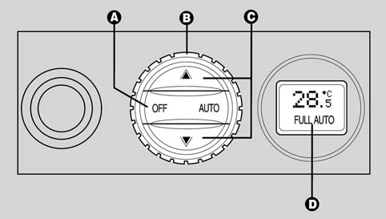
A - FULl AUTO function activation button (automatic operation) and end of air flow to rear seats OFF;
B - rear temperature adjustment knob;
C - air distribution selection buttons;
D - rear temperature display.
ADDITIONAL HEATER (diesel versions)
(available on request for certain versions/markets)
The diesel versions may be equipped with an additional heater which aids coolant heating immediately following start-up and during running so that the engine heats up faster and engine service temperature and passenger compartment heating are maintained at optimal levels in particularly cold climates.
The device, located inside the climate control system near the heater pack, receives an electric power supply and works completely automatically and can only be activated with the engine running.
The additional heater is activated at outside temperatures below 20 °C and when the temperature of the engine coolant is below 64 °C.
To prevent the battery from absorbing too much current, the additional heater comes on at 2 different heating powers (2 stage PTC) and is subject to a minimum supply voltage measured by the control unit.
At the end of the operating cycle, according to the heating of the engine coolant and the battery voltage, the heater switches off automatically and does not come back on again until the next time the engine is started up, even if the temperature of the coolant goes below 64 °C again.
The operation is halted, until the cause of the problem ceases, if:
-the Customer selects an air flow rate of 0-the Customer switches the climate control system control unit offAIR BAG (available on request for certain versions/markets)
The new Alfa 159 can be equipped with an electronically controlled Air Bag system (up to eight) which, in the case of a frontal or side impact of a certain severity, partly or completely activates the various safety devices.
All the vehicles may be equipped with the following Air Bags fitted as standard or available on request:
-Driver's Air Bag in the centre of the steering wheel;-Front passenger Air Bag in the top part of the dashboard;-Driver's knee air bag in the centre under the steering wheel (Fig. 17)-Front passenger Knee Bag in the lower part of the dashboard (B - Fig. 17)-Side Bags, to protect the chest, in the front seat backrests;-Front Window Bags (Fig. 18) behind the roof side linings.Fig. 17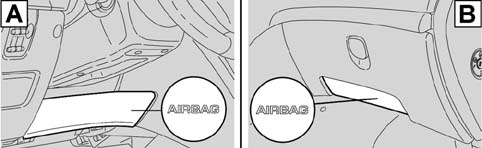
| The front passenger Air Bags, knee bags and side bags can be deactivated using the special switch operated through the key on the right side of the dashboard. |
SEATS
Both the front ( manually or electrically operated) and rear seats can assume various configurations; the main adjustments are described below;
Manually adjustable front seats
-Adjustment in lengthwise direction-Height adjustment-Backrest angle adjustment-Lumbar adjustment-Seat heating (where fitted)Electrically adjustable front seats (Fig. 18)
-Multifunction control A for:-seat front height adjustment;-seat rear height adjustment;-vertical movement of the seatl-lengthwise movement of the seat;-Backrest angle adjusment B-Driver's seat position memorizing buttons C.-Lumbar adjustment (manual control)-Seat heating (where fitted)Fig. 18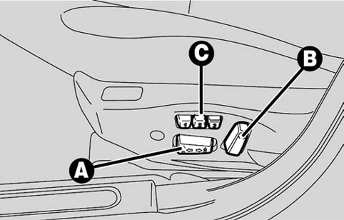
The front seats are also equipped with an antiwhiplash device which, in the case of rear impacts moves the head restraint closer to the nape of the neck
Centre armrest with oddments pocket and climate controlled food compartment
The Alfa 159 is equipped with a centre front armrest (Fig. 19) divided into two spacious compartments:
-by lifting the cover access is gained to a first oddments compartment.-by lifting the cover further (tab A) access is gained to a second heated/refrigerated compartment connected to the climate control system by means of an air vent. the air flow rate can be adjusted using wheel B.Fig. 19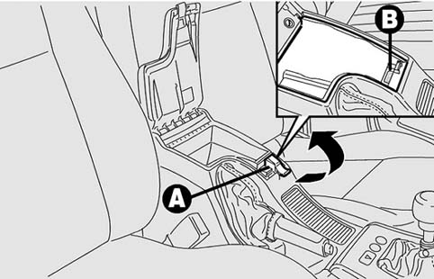
Expanding the luggage compartment
The rear seats backrest can be folded over on the Alfa 159 to extend the luggage compartment as follows:
-remove the rear seat head restraints;-move the seat belt sideways checking that the belt is fully extended;-lift up the backrest retaining lever and fold it over forwards.Lifting the lever is shown by a 'red band'.
PARKING SENSORS
(available on request for certain versions/markets)
The vehicle is available with a front system (A - Fig. 20) andor rear B that advises the driver of the presence of obstacles in front or and/or behind the vehicle.
The front and rear sensors are automatically activated with the key inserted in the starting device when reverse gear is engaged. When reverse gear is disengaged, the rear sensors are deactivated, whilst the front ones remain activated until a speed of around 15 km/h is exceeded to allow the parking manouevre to be completed.
The front sensors can be activated by pressing the button on the front courtesy light; when the front sensors are activated, a warning light in the button comes on. Press the button again to exclude the sensors.
When the sensors are activated, the system starts giving off acoustic signals from the front or rear as soon as an obstacle is detected and the frequency increases as the obstacle gets closer.
When the obstacle is less than 30 cm away, the sound becomes continuous. Depending on the position of the obstacle (in front or behind) the sound is issued by the corresponding acoustic signallers (front or rear).
The signal stops immediately if the distance from the obstacle increases. The tone cycle remains constant if the distance measured by the centre sensors remains unchanged, whilst if this situation occurs for the side sensors, the signal is interrupted after 3 seconds (for example, to prevent signals in the case of manouevres alongside walls).
Fig. 20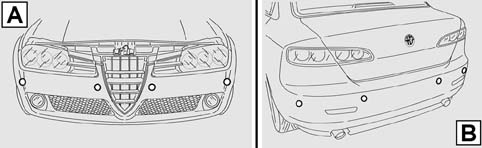
Sensor operating range
The sensors allow the system to control the front and rear of the vehicle.
Their position covers the middle and side areas of the front and rear of the vehicle.
If an obstacle is located in the middle area, it is detected at a distance of less than 0.9 m (front) or 1.40 m (rear).
If the obstacle is loated in the side area, it is detected at a distance of less than 0.6 m.
SUN ROOF (available on request for certain versions/markets)
It comprises a moving, hinged opening glass panel that slides horizontally; therefore the opening stage allows the opening of the sun roof for the entire length of the glass panel.
The sun roof is also equipped with a sun blind moved manually by a handle with slots to allow the air to pass through.
The sun roof can only be operated with the key inserted in the starting device.
The control on the centre courtesy light is designed for the sun roof opening/closing function.
Anti-crush safety device
The anti-crush safety system, fitted on the blind front profile, is activated during the horizontal (front edge) and vertical closing stage (rear edge) and intervenes after an obstacle is enountered (e.g. finger, hand, etc.) guaranteeing the reversal of the movement for a brief section.
RADIO
The vehicle radio may be fitted with:
-CD player (radio with Compact Disc player)-or CD MP3 player (radio with Compact Disc MP3 player)The radio has been designed in accordance with the specific features of the passenger compartment with a personalized design that is in keeping with the style of the dashboard. the radio is the fixed type and cannot be adapated for use on any other vehicle.
The acoustic system has been specially designed for the passenger compartment and is available in two customized versions:
-Standard Audio System-BOSE sound system Hi-FiThe Standard Audio system comprises 8 speakers: 4 165 mm 30W mid-woofers and 4 30W tweeters located in the vehicle side panels (front and rear doors) and in the dashboard.
The BOSE Hi-Fi sound system comprises 9 speakers: 4 165 mm 90W mid-woofers, 4 40 mm 50W tweeters and an 80 mm 50W mid-tweeter plus a 265 mm 200W sub-woofer and a 6 channel power amplifier.
THE TELEMATIC OFFER
Different content levels are available on the Alfa 159 to cover all requirements:
-Preparation for the connection of a mobile phone-Radio Navigator with Maps and GSM Telephone-Radio Navigator with Maps and GSM Telephone with information services (information and emergency services)